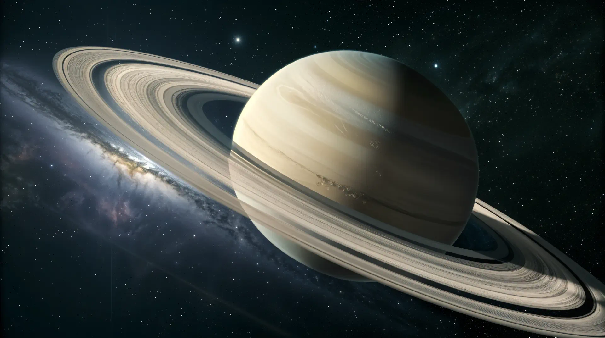

Saturn: The Ringed Giant
Saturn, the sixth planet away from the Sun, and known to be the second largest planet in our solar system. Saturn is adorned for its dazzling and sophisticated icy rings. Saturn is a gas giant, being primarly composed of hydrogen and helium; posessing a huge collection of moons.